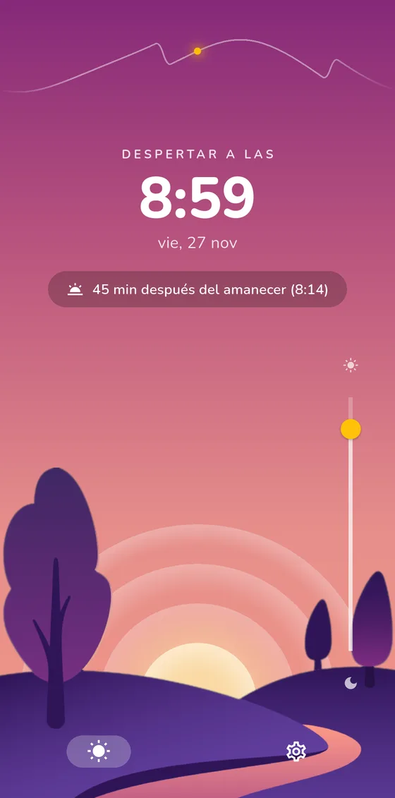

El amanecer cambia un poco cada día. Tu alarma también debería hacerlo. Wake at Sunrise calcula el amanecer de mañana para tu ubicación exacta y suena justo en ese momento, o los minutos antes o después que mejor te vengan.

Cómo funciona
La app necesita saber en qué lugar del planeta te despiertas. Es lo único que te pide, y se queda en tu teléfono.
Que suene justo al amanecer, o unos minutos antes o después. Elige qué días de la semana está activa la alarma.
Cada noche, la alarma se reajusta en silencio al amanecer de mañana. A medida que el alba se desplaza a lo largo del año, tu hora de despertar se desplaza con ella.
Funciones
Una sola tarea, despertarte al amanecer, hecha con cuidado.
No un promedio de la ciudad: la hora real del amanecer donde está tu teléfono, calculada en el propio dispositivo con matemáticas astronómicas.
Dile cuántas horas quieres dormir y cuánto tiempo necesitas para relajarte. Cuenta hacia atrás desde el amanecer de mañana y te avisa para que te acuestes a tiempo.
Un gráfico de cómo varía el amanecer a lo largo del año, con un punto en el día de hoy, para que sepas hacia dónde van tus mañanas.
Suena sobre la pantalla de bloqueo, sigue activa tras reiniciar el teléfono y puede ignorar el volumen del sistema, para que un teléfono en silencio no signifique una mañana perdida.
Sin servicio meteorológico, sin servidor. El amanecer se calcula en el propio teléfono, así que la alarma funciona en modo avión y lejos de cualquier cobertura.
Totalmente traducida, con la duración al posponer, el volumen y los días de la semana configurables.
Privacidad
El único permiso relevante de la app es la ubicación, y sirve exactamente para una cosa: calcular el amanecer donde estás.
Acceso anticipado
Wake at Sunrise está a punto de empezar una beta cerrada en Android. Únete al grupo de testers y recibirás el enlace de instalación en cuanto se abra.
Unirme al grupo de testersEs gratis y no hay nada que comprar. Usa la cuenta de Google con la que vas a instalar la app: así Google Play sabe que debe mostrártela.
Acceso anticipado
Wake at Sunrise está en beta cerrada en Android. Dos pasos rápidos y es tuya: tus comentarios dan forma al lanzamiento.
Google Play necesita tu cuenta en la lista de testers antes de mostrarte la app. ¿Ya te uniste? Pasa al paso 2.
Unirme al grupoAbre esto en el teléfono con el que vas a probar, con la sesión iniciada en esa misma cuenta de Google.
Abrir la prueba en Google PlayProbarla es gratis y no hay nada que comprar. Mantén la app instalada un par de semanas, por favor: Google cuenta los testers continuos antes de permitir que una app nueva se publique.
Descarga
Wake at Sunrise está en Google Play. Gratis, sin anuncios, sin cuenta.
Disponible en Google PlayAcceso anticipado
Wake at Sunrise está terminando una beta cerrada en Android. ¿Quieres participar? Envía un correo rápido y te mandaremos el enlace.
Pedir el enlace de la beta